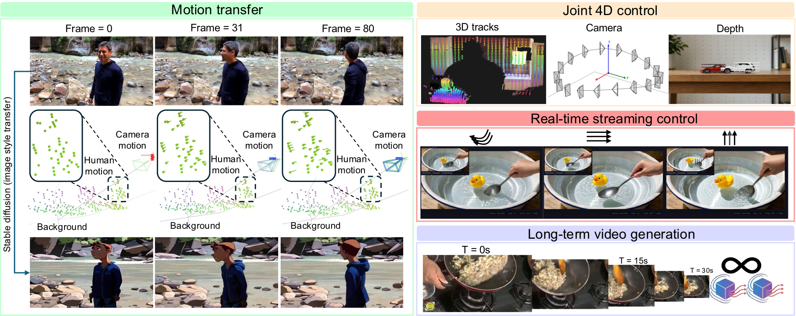

Interactive Video Generation with Online 4D Control
Unifying 3D point tracks, camera motion, and depth into a single conditioning interface for real-time streaming 4D-controllable video generation.
Diffusion-based video generation achieves impressive quality, yet existing methods offer limited fine-grained motion control: camera-parameter approaches cannot manipulate objects, 2D trajectory methods lack depth awareness, and recent 3D-aware methods are restricted to offline, fixed-length generation.
We present 4DStreamCtrl, built on the insight that camera motion, object trajectories, and depth can be unified into a single 3D point track representation. We construct a million-scale 3D track dataset from in-the-wild videos and design a lightweight Geometric Motion Head that encodes these signals into pre-trained video diffusion models, enabling joint camera–object control, depth editing, and motion transfer in one forward pass.
We further distill the teacher into a causal streaming student with attention sinks and local windows for constant-memory, arbitrarily long generation. 4DStreamCtrl runs at 20 FPS on a single H100 for 480p video, achieving state-of-the-art control precision while enabling, for the first time, truly interactive 4D-controllable streaming video generation.
4DStreamCtrl consists of three core components: a scalable 3D track dataset, a geometric motion-conditioned video model, and a streaming distillation pipeline for interactive control.

Million-scale dataset mined from OpenVid-1M with dense 3D point trajectories, camera intrinsics/extrinsics, and foreground/background decomposition via SpatialTrackerV2.
Lightweight module that rasterizes 3D tracks onto the VAE latent grid with sinusoidal identity embeddings and a separate depth branch, fused via channel concatenation with the Wan 2.2 DiT backbone.
Self-forcing + DMD distillation produces a causal student with block-wise attention, attention sinks, and KV-cache reuse — generating each chunk in only 4 denoising steps (12.5× faster).
4DStreamCtrl supports five control modalities within a single unified model.
Manipulate the trajectory of individual objects using 3D point tracks. The model faithfully follows specified motion paths while maintaining visual plausibility.
Precisely control camera viewpoint, including pan, zoom, and orbit, through camera-aware 3D track conditioning.
Simultaneously coordinate object dynamics with camera motion in a single forward pass—both are unified through 3D point tracks.
Condition generation on depth signals for spatially consistent results. 3D tracks with explicit depth resolve ambiguities that 2D-only methods cannot handle.
Extract decomposed 4D motion (camera, human, background) from a source video and retarget it onto a new visual appearance via style transfer — preserving 3D-consistent dynamics.
Users can interactively steer the generation by providing control signals (e.g., dragging objects) while the video streams in real time at 20 FPS on a single H100 GPU.
2D interactive control with depth conditioning: the user draws 2D trajectories on the canvas while depth information is jointly provided, enabling depth-aware object manipulation in a streaming fashion.
Full 3D interactive control: the user directly manipulates 3D point tracks in a 3D viewport, enabling precise camera and object motion control with real-time visual feedback during streaming generation.
3D track conditioning resolves depth ambiguity that 2D methods cannot handle, producing physically plausible results with correct occlusion ordering.
Without track guidance, objects exhibit unnatural behavior (size growth, implausible rotation). Track conditioning enforces spatial consistency and physically coherent interactions.
| Method | Backbone | FPS ↑ | PSNR ↑ | SSIM ↑ | LPIPS ↓ | EPE ↓ |
|---|---|---|---|---|---|---|
| Image Conductor | AnimateDiff | 2.98 | 11.30 | 0.214 | 0.664 | 91.64 |
| Go-With-The-Flow | CogVideoX-5B | 0.60 | 15.62 | 0.392 | 0.490 | 41.99 |
| Diffusion-As-Shader | CogVideoX-5B | 0.29 | 15.80 | 0.372 | 0.483 | 40.23 |
| ATI | Wan 2.1-14B | 0.23 | 15.33 | 0.374 | 0.473 | 17.41 |
| MotionStream Teacher | Wan 2.2-5B | 0.74 | 16.10 | 0.466 | 0.427 | 7.86 |
| MotionStream Causal | Wan 2.2-5B | 10.4 | 16.30 | 0.456 | 0.438 | 11.18 |
| Ours Teacher | Wan 2.2-5B | 0.84 | 16.04 | 0.479 | 0.404 | 5.29 |
| Ours Causal | Wan 2.2-5B | 20.6 | 15.48 | 0.457 | 0.426 | 5.48 |
Explore the 3D point trajectories extracted from in-the-wild videos. Rotate, zoom, and pan to inspect the reconstructed scene geometry and motion structure.
@inproceedings{4dstreamctrl2026,
title = {4DStreamCtrl: Interactive Video Generation with Online 4D Control},
author = {4DStreamCtrl Team},
year = {2026}
}